Revolution Counter Project
The Revolution Counter Project required the design and construction of a system that could measure the RPM of two motors as well as to calculate the difference in RPM between the motors. A Graphical User Interface was designed in the MATLAB environment to control the direction and speed of each motor and to display the speed of each motor including the difference in speed of the motors in real-time. The two LM393 encoder sensors were used to count the revolutions and the LN293D IC was used to drive the motors. The system can be applied to any rotating system/shaft to measure and compute the speed it produces.
Download report 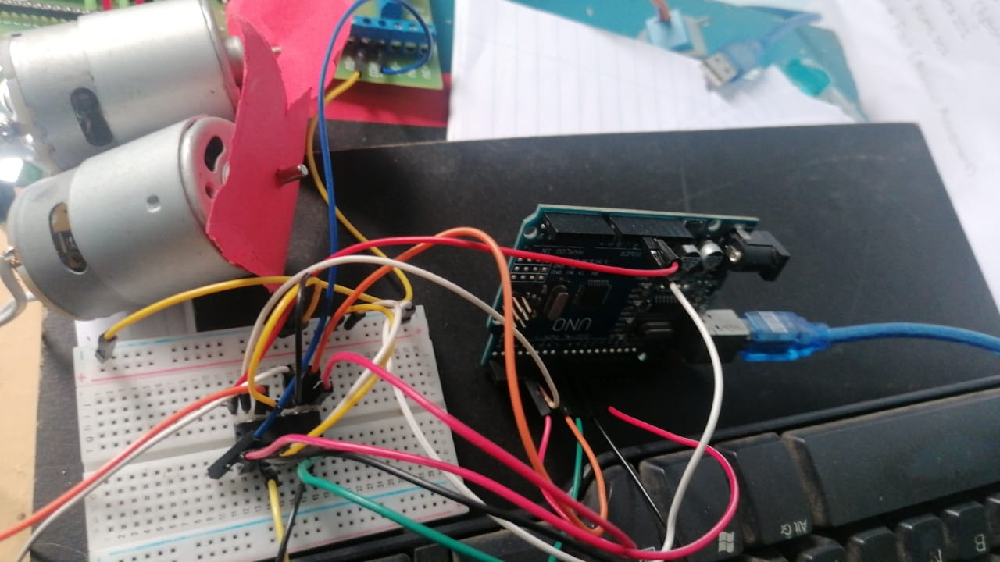 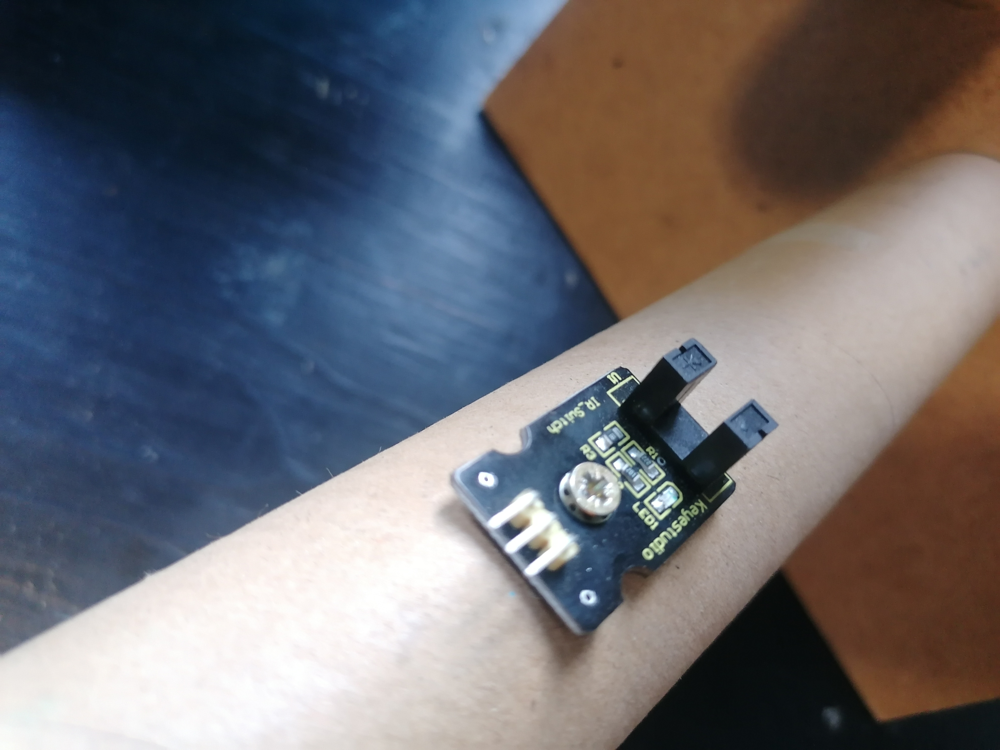 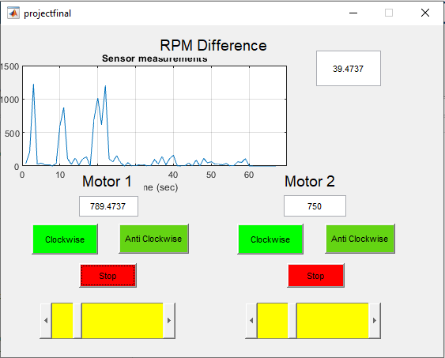 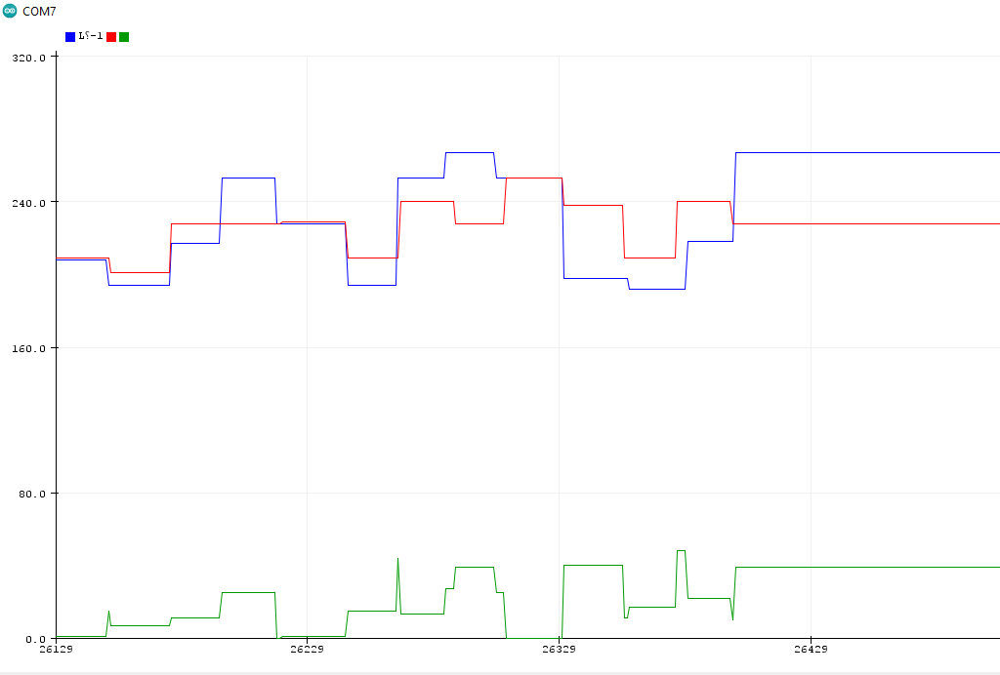Breast Cancer Cell Image Processing
A mammogram X-Ray scan which needed image processing to improve visibility of a breast cancer cell before an operating procedure. From the intensity transform techniques, the negative transform was implemented to invert dark areas of the scan to white and light areas of the scan to black which improved the cancer cell location and size for a medical specialist to make a much more informed decison going ahead with the removal procedure.
.png) 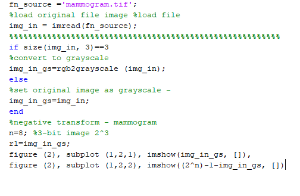
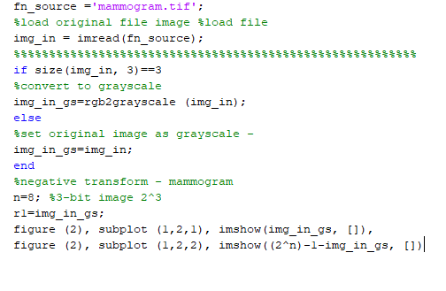
ASCII Binary representation
The use of LEDs to represent the ASCII codes for letters of the alphabet using embedded systems. The chip used was the STM32L053R8 from the ARM family of microcontrollers. The program depicts alphabets from A to Z in the binary form. This was the basis to create an LCD write function to display letters and numbers as strings to the LCD.
ADC configuration
The setup of the ADC within the chip to display analog voltage values as a range. This can be applied to a multitude of analog sensors such as temperature, pressure and many more sensors that return an analog range of values. Bare-Metal programming was used for this setup.
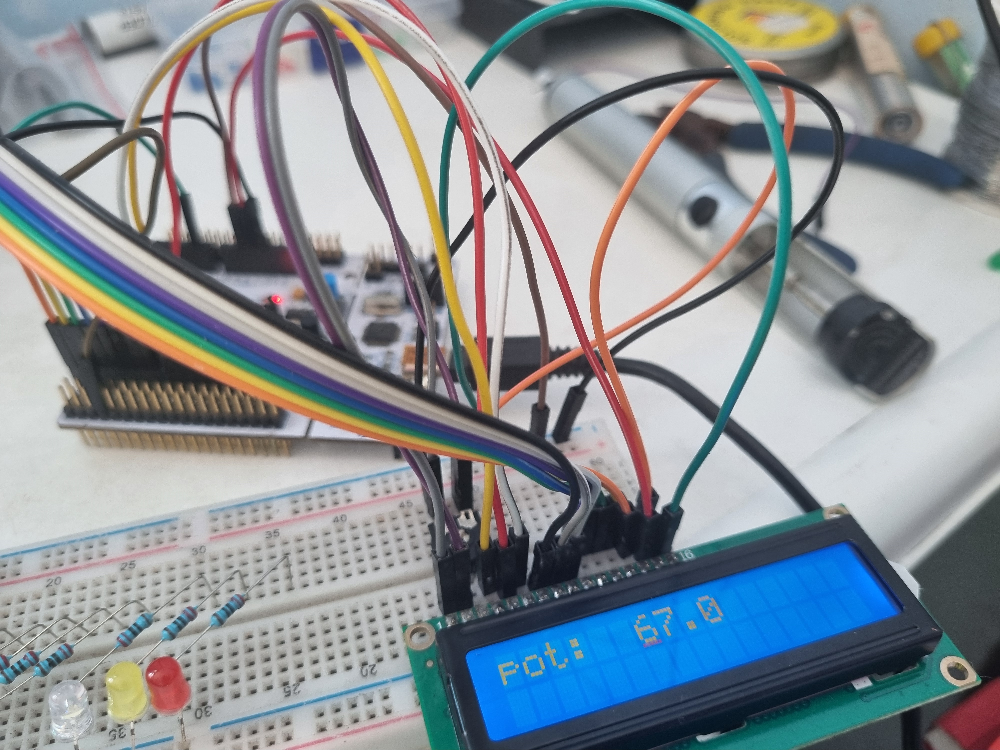 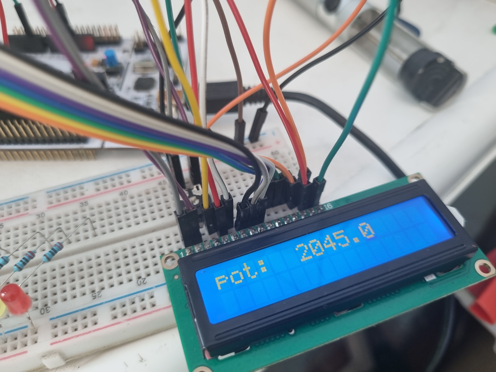 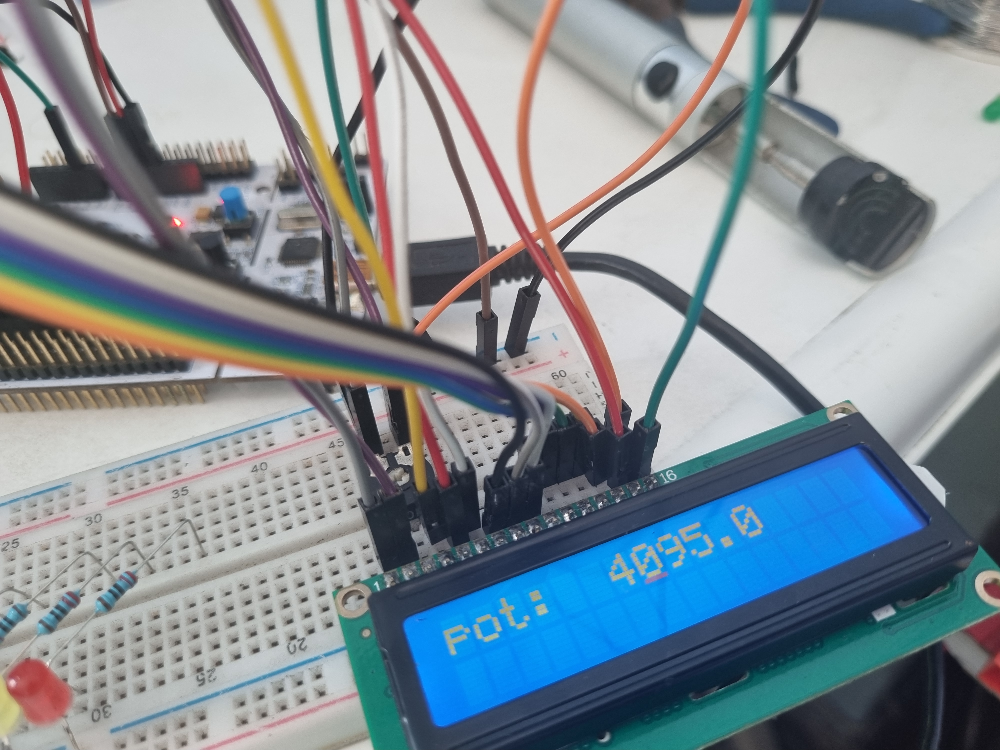 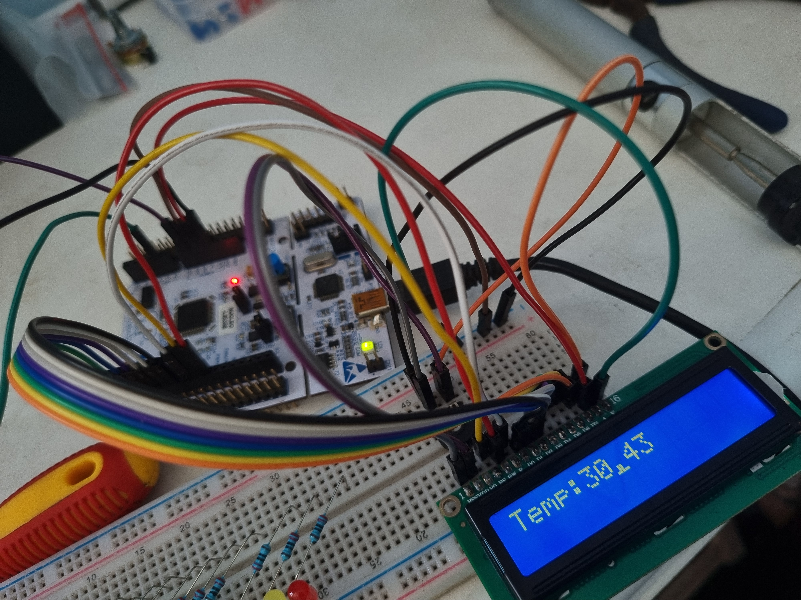Y-Motor Repair
The Tajima Industrial Electronic Embroidery Machine required a Y-motor belt replacement and re-calibration. The machine had to be stripped and recalibrated from the Y-motor driver board in terms of timing and position. The complex machine is valued at R225 000.00 which was saved and is back in operation reducing further failures and downtime crucial to production targets.
Sewing Motor and Trimmer
The sewing motor had to be recalibrated and the machine had to be stripped part by part and rebuilt after the repair was complete. The main motor had to be re-wired to the driver board and the re-calibration of the encoder and timing had to be completed for efficient operation. The trimming mechanism which drives the knife had to be adjusted to work in-sync with the sewing motor. The trimmer board required some troubleshooting in terms of replacing the position sensor.

Digital Subtraction Angiology
The use of Image Processing to implement image subtraction to illustrate blood vessels from a medical scan of the head. The task shows the derivation of images for better visibility of the blood vessels for a medical specialist to have a better view of the blood vessel system which can aid the specialist to locate blockages and allow for better and more informed decision making on the procedure ahead.
.png) 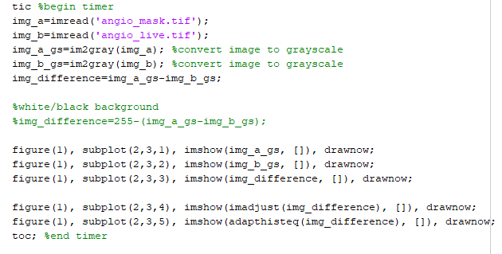
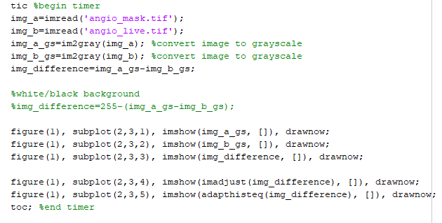
Dental Imaging
The use of Image Processing to implement a mask on a dental scan to focus on the Region Of Interest (ROI) to locate the filling on the relevant teeth. To achieve the result a custom mask had to be created to mask the unwanted areas of the scan and display the teeth that included filling by filtering and setting pixels to 1 that had intensities greater than the level of 0.
.png)
.png) 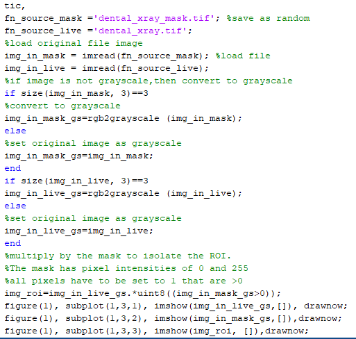
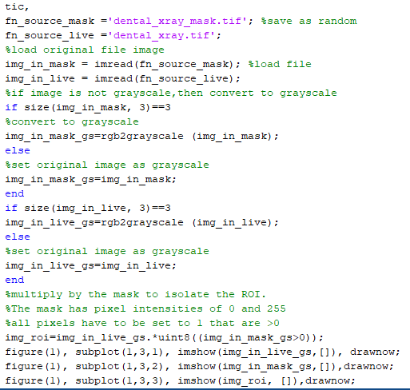